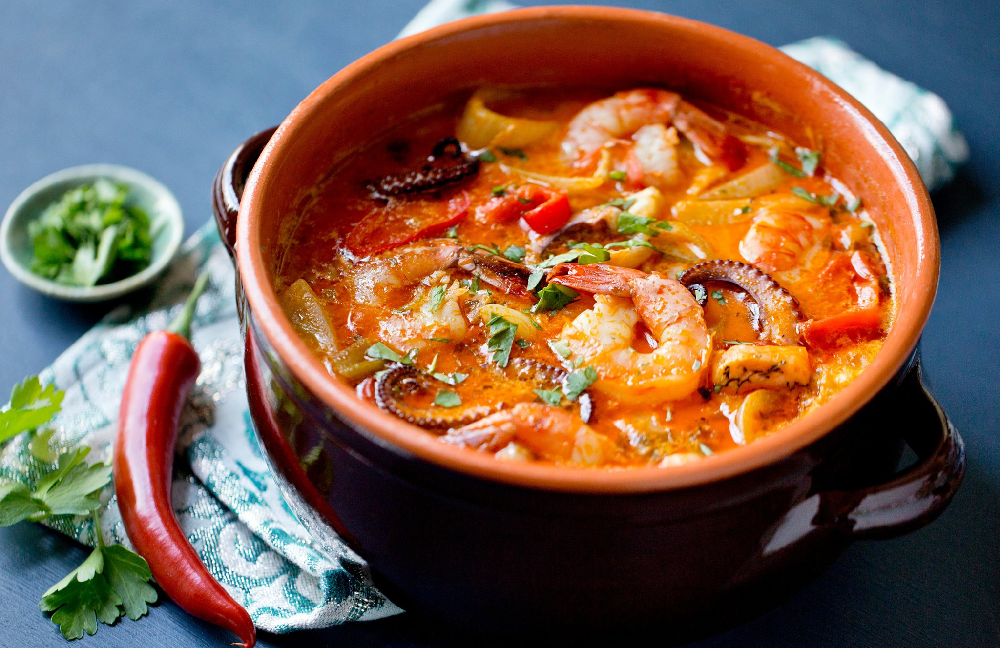
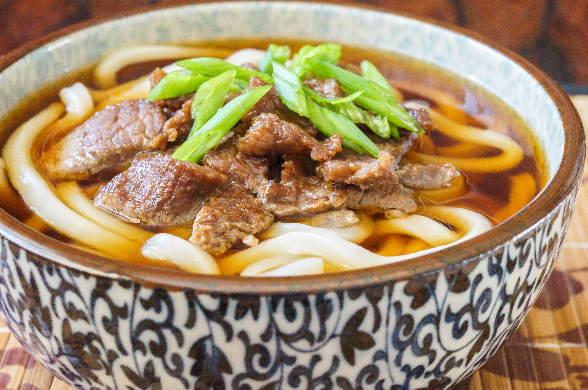

11/12/13

Moqueca
"This is a wonderful Japanese soup, very popular throughout Japan - with chicken, eggs, and vegetables. A meal in and of itself!"
Ingredients
Soup
- 1 1/2 to 2 lbs of fillets of firm white fish such as halibut, swordfish, or cod, rinsed in cold water, pin bones removed, cut into large portions
- 3 cloves garlic, minced
- 4 Tbsp lime or lemon juice
- Salt
- Freshly ground black pepper
- Olive oil
- 1 cup chopped spring onion, or 1 medium yellow onion, chopped or sliced
- 1/4 cup green onion greens, chopped
- 1/2 yellow and 1/2 red bell pepper, seeded, de-stemmed, chopped (or sliced)
- 2 cups chopped (or sliced) tomatoes
- 1 Tbsp paprika (Hungarian sweet)
- Pinch red pepper flakes
- 1 large bunch of cilantro, chopped with some set aside for garnish
- 1 14-ounce can coconut milk
Rice
- 1 Tbsp olive oil
- 1/2 onion, chopped
- 1 clove garlic, minced
- 1 cup white rice
- 1 3/4 cups boiling water (check your rice package for the appropriate ratio of liquid to rice for the type of rice you are using)
- 1 teaspoon salt
Directions
1
Coat fish with garlic and lime juice: Place fish pieces in a bowl, add the minced garlic and lime juice so that the pieces are well coated. Sprinkle generously all over with salt and pepper.
Keep chilled while preparing the rest of the soup.
2
Make rice for serving with soup: If you are planning on serving the soup with rice, start on the rice.
Bring a couple cups of water to a boil. Heat one Tbsp of olive oil in a medium saucepan on medium high heat. Add the chopped 1/2 onion and cook, stirring, until the onion is translucent. Add the garlic and cook for 30 seconds more, until the garlic is fragrant. Add the raw white rice and stir to coat completely with the oil, onions, and garlic.
Add the boiling water. (The amount depends on your brand of rice, check the package. If no amounts are given, add 1 3/4 cup of water for every cup of rice.) Stir in 1 teaspoon of salt.
Bring to a simmer, then lower the heat, cover, and let cook for 15 minutes, after which, remove from heat until ready to serve with the soup.
3
Start cooking the onion, bell pepper, tomatoes, onion greens: In a large covered pan (such as a Dutch oven), coat the bottom with about 2 Tbsp of olive oil and heat on medium heat.
Add the chopped onion and cook a few minutes until softened. Add the bell pepper, paprika, and red pepper flakes. Sprinkle generously with salt and pepper. (At least a teaspoon of salt.) Cook for a few minutes longer, until the bell pepper begins to soften.
Stir in the chopped tomatoes and onion greens. Bring to a simmer and cook for 5 minutes, uncovered. Stir in the chopped cilantro.
4
Layer vegetables with fish, add coconut milk: Use a large spoon to remove about half of the vegetables (you'll put them right back in). Spread the remaining vegetables over the bottom of the pan to create a bed for the fish.
Arrange the fish pieces on the vegetables. Sprinkle with salt and pepper. Then add back the previously removed vegetables, covering the fish.
Pour coconut milk over the fish and vegetables.
5
Simmer, cook, adjust seasonings: Bring soup to a simmer, reduce the heat, cover, and let simmer for 15 minutes. Taste and adjust seasonings.
You may need to add more salt (likely), lime or lemon juice, paprika, pepper, or chili flakes to get the soup to the desired seasoning for your taste.
Garnish with cilantro. Serve with rice or with crusty bread.
Recipe Source
11/11/13

Udon
"This is a wonderful Japanese soup, very popular throughout Japan - with chicken, eggs, and vegetables. A meal in and of itself!"
Ingredients
- 6 cups prepared dashi stock
- 1/4 pound chicken, cut into chunks
- 2 carrots, diced
- 1/3 cup soy sauce
- 3 tablespoons mirin
- 1/2 teaspoon white sugar
- 1/3 teaspoon salt
- 2 (12 ounce) packages firm tofu, cubed
- 1/3 pound shiitake mushrooms, sliced
- 5 ribs and leaves of bok choy, chopped
- 1 (9 ounce) package fresh udon noodles
- 4 eggs
- 2 leeks, diced
Directions
Heat dashi stock, chicken, carrots, soy sauce, mirin, sugar, and salt in a pot over medium heat. Simmer until chicken is no longer pink in the center, 5 to 7 minutes. Add tofu, mushrooms, and bok choy, stirring until vegetables are tender, about 5 minutes more.
Stir udon noodles into broth and simmer until tender, 3 to 4 minutes. Add leeks and crack eggs into soup; simmer until eggs are slightly firm, about 5 minutes more.
Recipe Source